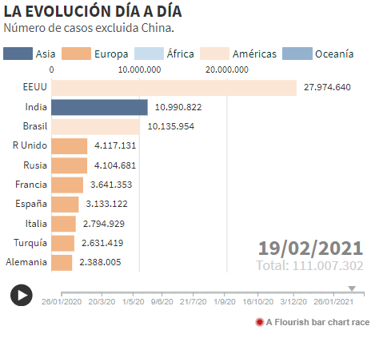
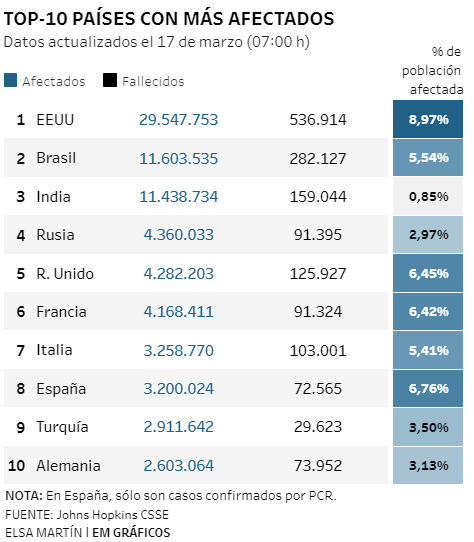
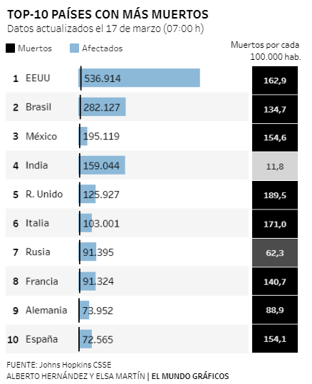

Práctica 1. Visualización de datos
ElMundo presenta una noticia sobre el covid-19 con datos que se van actualizando periódicamente, y adjunta unos cuantos gráficos para mostrar la realidad.
El primer gráfico se trata de la evolución diaria del número de casos en todos los países del mundo, con la excepción de China, desde que arrancó la pandemia. Se trata de un gráfico en barras horizontales que se ejecuta directamente como video y te muestra esa evolución. Te diferencia los países por continentes usando diferentes colores, se especifica qué país es a la derecha, mientras que a la izquierda está el dato numérico que no para de crecer.
Este gráfico me parece bastante bueno porque se presenta la información de una manera más rápida y directa. El único pero que le pondría es que está en bucle: una vez llega hasta el último día se reinicia y empieza de nuevo desde enero de 2020, por lo que yo le quitaría ese bucle para que pare hasta el último dato, el más actualizado.
El siguiente gráfico que presentan en esta noticia representa los diez países con más afectados. Este gráfico, con todos los respetos, es un poco espantoso. Aplica una selección de colores a los números en dos columnas diferentes: una para los afectados y otra para los fallecidos, eligiendo el azul y el negro respectivamente. Esto a simple vista no se logra entender, hay que detenerse y mirar bien para captar la idea. Además, la última columna presenta el porcentaje de población afectada y también usa una gama de colores centrada en el azul, por lo que la información no es del todo clara. Tiene pinta que eligieron el patrón de colores por la identidad del medio, pero para este tipo de información no sería del todo correcta.
Por último, este gráfico representa los diez países con más muertos por covid-19. Utiliza el mismo patrón de colores que el anterior, pero este usa el azul en un gráfico en barras horizontales para mostrar el número de afectados en cada país, mientras que pintan una casilla en negro con el número de muertos por cada 100.000 habitantes.
De esta manera sí que se presenta la información de una manera más clara, pero el parámetro para aplicar el negro a la última columna es confuso, pues a India no le aplican ese color ya que tiene 11,9 muertos por cada 100.000 habitantes, pero aparece en la gráfica al ser el cuarto país con mayor número de afectados en el mundo. Se puede suponer que aquellos países que superen el umbral de 100 muertos por cada 100.000 habitantes tendrán su casilla en negro, pero hay países como Rusia y Francia que presentan números más bajos y aun así tienen la casilla coloreada, por lo que ese parámetro es algo confuso.